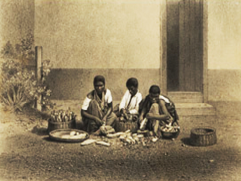

A história da escravidão

Permeando a história mundial, a origem dessa prática está relacionada às guerras e conquistas de territórios, nos quais o trabalho forçado era imposto aos povos vencidos. Pelo que se sabe, os primórdios da escravidão vêm do Oriente Médio (Antigo Oriente), mas povos nas Américas como os maias também se serviram de cativos.
Grande parte da população colonial brasileira era composta por africanos e seus descendentes escravizados. A mão escrava era o que garantia o desenvolvimento da economia, a prática era empregada na pecuária, lavoura, coleta, pesca e transporte de produtos. Os escravizados também realizavam uma diversidade de atividades desde o plantio até a preparação e o processamento do açúcar.
No engenho, por exemplo, O sistema de trabalho era por tarefas, cada escravo possuia uma tarefa diária. Além disso, todos realizavam serviços extras (construção de casas, cercas, consertos, entre outros). Aqueles que não cumpriam suas tarefas eram punidos e castigados enquanto os que tentavam fugir da condição desumana em que se encontravam, geralmente sofriam sérios castigos físicos.
| Como se relaciona com o açucar | Como se relaciona com o engenho | Como se relaciona com a mandioca |
 |
 |
 |
| Escravos eram utilizados na produção e comércio de açúcar | O engenho era operado por escravos para a produção de cana-de-açúcar e seus derivados, como a chaçaca | Era o principal alimento da dieta dos escravos, isso pela energia de baixo custo |
| Leia mais | Leia mais | Leia mais |